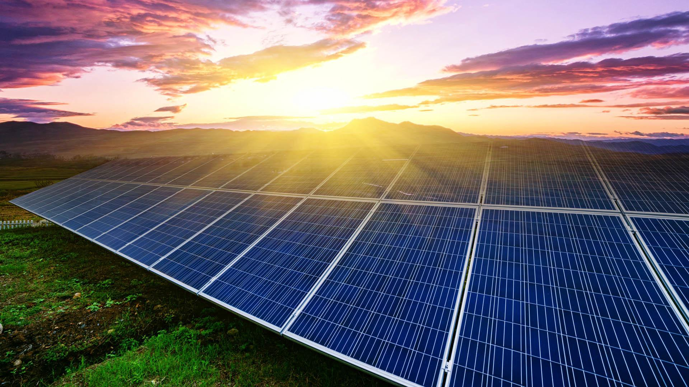
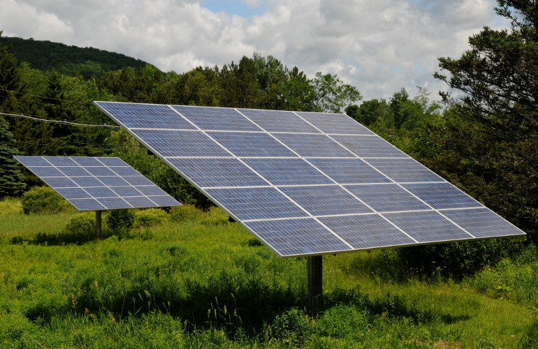
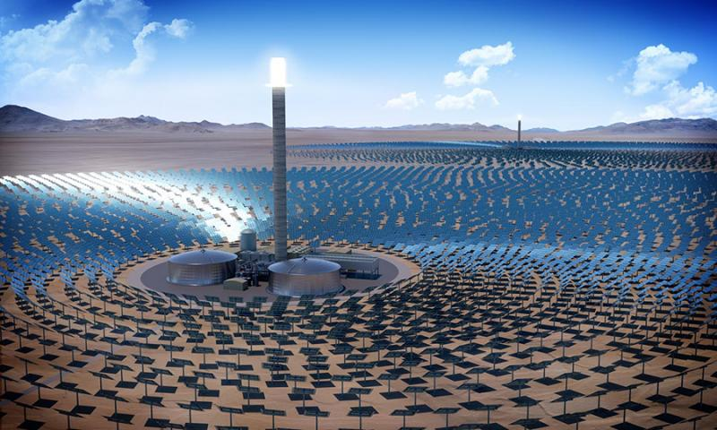

OVERVIEW
Solar power is energy from the sun that is converted into thermal or electrical energy. Solar energy is the cleanest and most abundant renewable energy source available,and the india has some of the richest solar resources in the world. Solar technologies can harness this energy for a variety of uses, including generating electricity, providing light or a comfortable interior environment, and heating water for domestic, commercial, or industrial use.

Harnessing Solar Energy
There are three main ways to harness solar energy: photovoltaics, solar heating & cooling, and concentrating solar power. Photovoltaics generate electricity directly from sunlight via an electronic process and can be used to power anything from small electronics such as calculators and road signs up to homes and large commercial businesses. Solar heating & cooling (SHC) and concentrating solar power (CSP) applications both use the heat generated by the sun to provide space or water heating in the case of SHC systems, or to run traditional electricity-generating turbines in the case of CSP power plants.

Solar Tracking System
A solar tracker is a device that orients a payload toward the Sun. Payloads are usually solar panels, parabolic troughs, fresnel reflectors, lenses or the mirrors of a heliostat.For flat-panel photovoltaic systems, trackers are used to minimize the angle of incidence between the incoming sunlight and a photovoltaic panel, sometimes known as the cosine error. Reducing this angle increases the amount of energy produced from a fixed amount of installed power generating capacity.
Solar Monitors
Solar monitoring systems operate through your solar system’s inverter(s). Companies often offer solar inverters that come with a proprietary monitoring software setup.As your solar inverter converts DC current into AC current for use in your home, information about power levels and production is collected and sent to cloud-based monitoring systems and their companion apps. You can access this information several ways, including through mobile apps and paired smart home devices.

Concentrating Solar Power
Concentrating solar power (CSP) plants use mirrors to concentrate the sun's energy to drive traditional steam turbines or engines that create electricity. The thermal energy concentrated in a CSP plant can be stored and used to produce electricity when it is needed, day or night. Today, roughly 1,815 megawatts (MWac) of CSP plants are in operation in the United States.